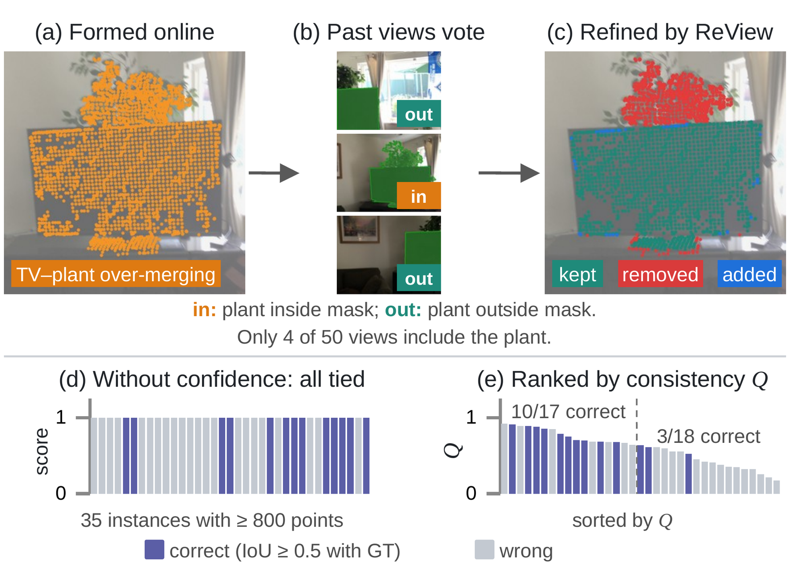
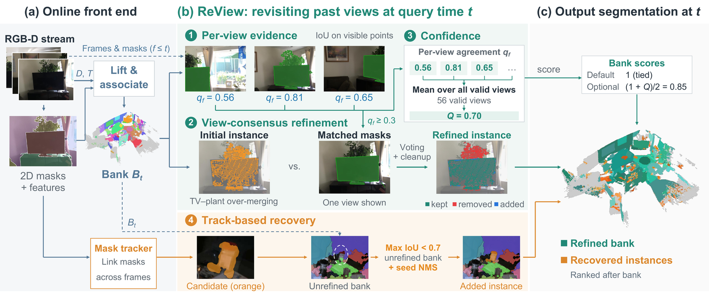
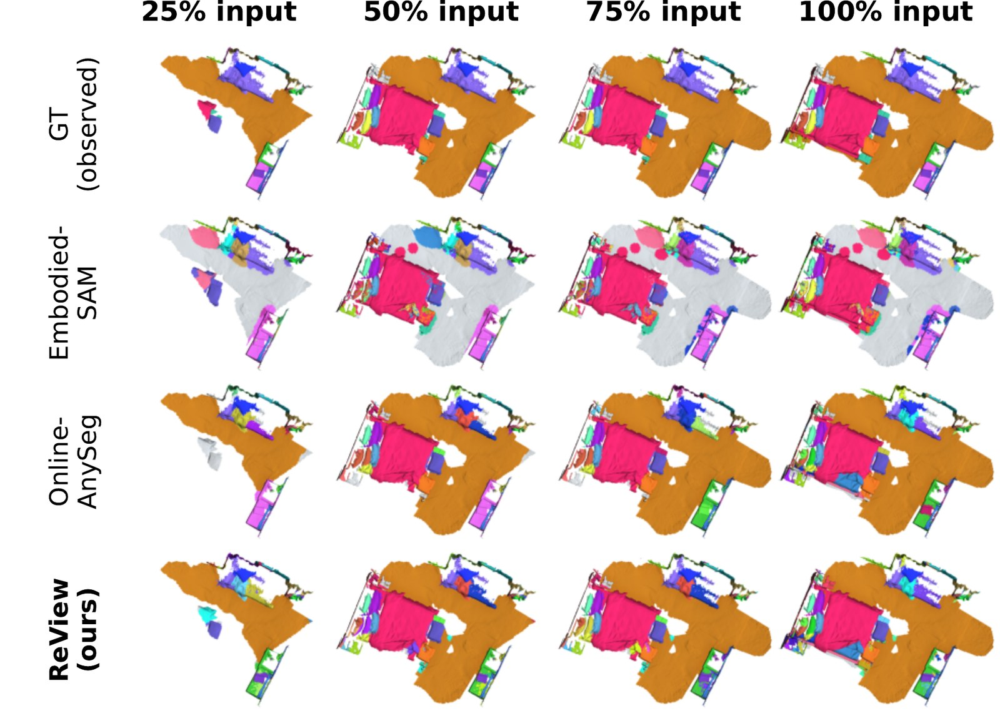

Full-input comparison

1Southeast University 2The Hong Kong University of Science and Technology 3National University of Singapore

Online zero-shot 3D instance segmentation identifies objects during scanning without training on 3D instance annotations. Existing methods incrementally associate 2D masks to build 3D instances. However, segmentation errors and missed instances can persist as observations accumulate. Moreover, some methods assign identical confidence scores to all instances, leaving reliable and unreliable instances indistinguishable. We observe that masks from different past viewpoints can reveal errors in accumulated instances, while their agreement with an instance indicates its reliability. We therefore propose ReView, a training-free framework that revisits accumulated instances at query time using only observations collected so far, without changing the online association process. For each instance, ReView finds the best-matching 2D mask in each valid past view. In view-consensus refinement, these masks provide votes on visible points from views with sufficient agreement, removing wrongly included points and adding missing ones before connectivity cleanup. Reusing the same matches, ReView averages agreement across all valid views to obtain an observation-consistency confidence for ranking instances. To recover missed objects, track-based recovery adds candidates from temporal mask tracks after overlap checks and duplicate suppression. Experiments on ScanNet200 and SceneNN show that ReView achieves the highest AP among the compared online and offline methods.

Best-matching 2D masks from past views vote on visible points, removing wrongly included points and adding missing ones before connectivity cleanup.
Reusing the same matches, ReView averages mask agreement across all valid views to rank instances.
Temporal mask tracks provide candidates for missed objects, admitted after overlap checks and duplicate suppression.
| Method | Online | Zero-shot | ScanNet200 | SceneNN | ||||
|---|---|---|---|---|---|---|---|---|
| AP | AP50 | AP25 | AP | AP50 | AP25 | |||
| OVIR-3D‡ | ✗ | ✓ | 14.4 | 27.5 | 38.8 | 12.3 | 24.4 | 34.6 |
| MaskClustering‡ | ✗ | ✓ | 19.7 | 36.4 | 51.4 | 16.3 | 31.7 | 46.2 |
| EmbodiedSAM | ✓ | ✗ | 14.80 | 36.57 | 64.43 | 11.18 | 30.99 | 61.48 |
| SAM3D† | ✓ | ✓ | 9.63 | 23.75 | 49.85 | 10.05 | 23.26 | 47.95 |
| Stream3D§ | ✓ | ✓ | 19.18 | 34.31 | 53.44 | 16.27 | 30.43 | 47.25 |
| OnlineAnySeg | ✓ | ✓ | 18.96 | 36.77 | 55.63 | 18.12 | 36.17 | 59.86 |
| ReView (ours) | ✓ | ✓ | 21.38 | 41.05 | 62.51 | 20.75 | 39.33 | 62.43 |
| ReView + conf. (ours) | ✓ | ✓ | 19.34 | 40.31 | 63.12 | 18.97 | 39.82 | 62.06 |
Full-input results with OnlineAnySeg's released evaluation script. Online methods are our reruns on the same input sequences; ReView + conf. ranks the same masks by confidence. ‡: offline, reported by OnlineAnySeg with the same script. †: SAM3D without its optional over-segmentation ensemble. §: released code with our masks; uses the complete scene mesh and is included only as a full-input reference. Bold / underline: best / second best per column. Results with an alternative evaluation protocol are reported in the paper.

@article{zhang2026review,
title = {ReView: Online Zero-Shot 3D Instance Segmentation by Revisiting Past Views},
author = {Zhang, Yuanyang and Yao, Li and Lin, Yijie and Wang, Xinchao},
journal = {arXiv preprint},
year = {2026}
}
The arXiv identifier will be added once the preprint is available.